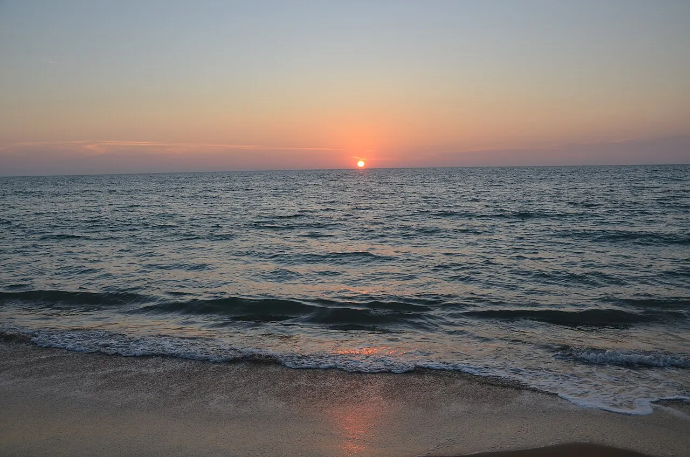

Kalpitiya
Province du Nord-Ouest, Sri Lanka · kitesurf

Lagune plate et venteuse, avec des dauphins au large. L’un des meilleurs spots de kite d’Asie.
- Lieu
- Province du Nord-Ouest, Sri Lanka
- Niveau
- Intermédiaire
- Activités
- kitesurf
- Type d'eau
- Mer / océan
- Coordonnées
- 8.23, 79.76 (position approximative du secteur)
Dangers à connaître
- Vent fort.
- Faune marine.
Le conseil d'Ocean Buddy
Le vent souffle de mai à octobre et de décembre à mars.
Ouvrir dans Ocean Buddy Télécharger sur l'App Store
Source : Fiche Ocean Buddy · septembre 2026 · à vérifier localement.